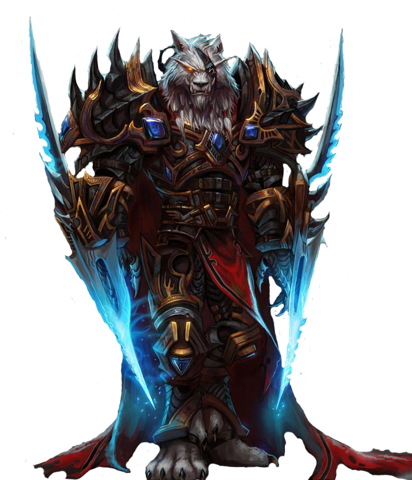

Ninguém sabe exatamente como o universo começou. Alguns teorizam que uma explosão cósmica catastrófica espalhou as jóias do infinito nos mundos na imensidão da Grande Escuridão – mundos que um dia teriam formas de vida maravilhosas e fofas. Outros acreditam que o universo foi criado por uma única entidade todo-poderosa. Embora as origens exatas do universo caótico permaneçam incertas, está claro que uma raça de seres poderosos surgiu para trazer estabilidade a esses vários mundos e assegurar um futuro seguro para os seres que seguissem seus passos.
O Conto de Sargeras
Com o passar do tempo, entidades demoníacas do Caos Inferior fizeram seu espaço nos mundos dos titãs, e o Panteão elegeu seu maior guerreiro, Sargeras, para agir como sua primeira linha de defesa. Um gigante nobre de bronze fundido, Sargeras levou a cabo os seus deveres durante incontáveis milênios, procurando e destruindo estes demônios onde quer que eles pudessem estar.

A Corrupção dos Eredar
Quando Sargeras voltou para Argus ele transformou os eredars em demônios: Sargeras escolheu seus dois campeões para comandar seu exército demoníaco de destruição: Kil’Jaeden, o Enganador, e Archimonde, o Profanador.
O Mundo Novo de Azeroth
Quel'Thalas
A viagem dos Quel'Dorei foi complicada. Desde que tinham perdido o contato com a Fonte da Eternidade, tinham ficado doentes e envelhecido, a pele deles ficou branca e os seus cabelos ficaram loiros. Eles encontraram criaturas que nunca viram, como Humanos, que viviam em tribos. Mas o desafio maior eram os Trolls de Zul'Aman.
Os titanides deixaram as covas de Uldaman e se aventuraram pela superfície. Construíram uma cidade abaixo da mais alta das montanhas, chamaram esta terra de "Khaz Modan" e fundaram uma poderosa forja dentro da montanha. À cidade que surgiu ao redor da forja deram o nome de Ironforge. Desde então deixaram de ser titanides para serem anões
Tempos Recentes; A Era dos Mortais
O Último dos Guardiões
Com Sargeras derrotado, Aegwynn continuou protegendo Azeroth por novecentos anos. Até o Conselho de Tirisfal decidir o fim de seu papel como guardiã. Foi forçada a passar seus poderes a um guardião novo, mas Aegwynn decidiu procurar o novo guardião pessoalmente.
O Pacto de Sangue
De acordo com os criptoglifos da raça Draenei, o eredar demônio, Kil'Jaeden, conhecido como "o Trapaceiro", observava o inocente planeta Draenor das profundezas do Vórtice. Kil'Jaeden, planejou uma invasão discreta. Ele precisava de um poder forte para destruir tudo antes da Legião.